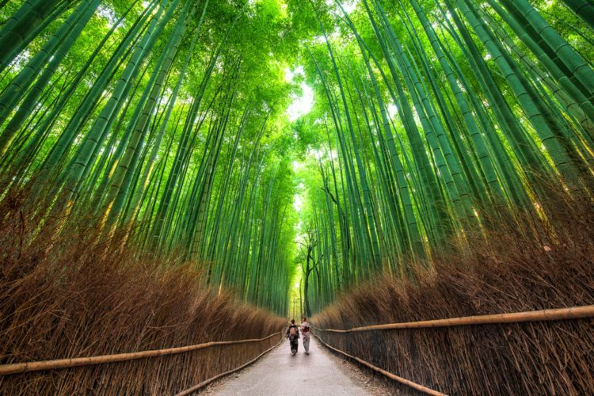

Самые красивые места мира:

Наша необъятная планета полна мест невыразимой красоты,
для знакомства с которыми подчас не хватит и целой жизни.
Для того, чтобы охватить всю удивительную земную красоту,
составлена данная подборка, где приведены самые красивые места мира,
расположенные в разных уголках нашей мира. Здесь нашлось место и природным достопримечательностям,
и рукотворным объектам, и знаменитым курортам, и экстремальным аттракционам.
Бурные водопады, величественные леса, чистейшие водоёмы,
головокружительные виды гор, самобытные древние поселения,
старинные замки, загадочные долины — всё это и многое другое стоит увидеть воочию хотя бы раз в жизни.
США

Йосемитский национальный парк, живописный горный регион в восточной части центральной Калифорнии, США. Он расположен примерно в 225 км к востоку от города Сан-Франциско и примерно в 160 км к юго-востоку от Сакраменто. Парк, окруженный со всех сторон национальными лесными угодьями, охватывает площадь 3080 км2. Он был внесен в список Всемирного наследия ЮНЕСКО в 1984 году. Штаб-квартира парка расположена в деревне Йосемити, в западно-центральной части парка.
Простираясь почти на 12,8 км с востока на запад и с гранитными стенами, в два раза превышающими высоту Эмпайр-Стейт-Билдинг, долина Йосемити является одним из чудес природы. Выделенные ледниковой динамикой, выветриванием и эрозией, охватывающей 30 миллионов лет, немногие другие места отражают таким замечательным образом геологические силы, которые сформировали нашу планету.
Долина, которая изгибается по небольшой дуге шириной от 0,8 до 1,6 км, имеет ряд достопримечательностей, таких как отвесные каменные стены, возвышающиеся на высоту от 900 до 1200 метров над дном долины, Йосемитский водопад, огромные своды и пики. Величайший из этих сводов - Эль-Капитан, гранитная опора около западного конца долины, которая возвышается на 2307 м. над уровнем моря и на 1100 метров над долиной. Напротив возвышается Half Dome, высота которого составляет 2693 метра, а с его вершины открывается превосходный вид. Известный Йосемитский водопад состоит из Верхнего Йосемитского водопада, Нижнего Йосемитского водопада и каскадов между ними; их суммарный поток составляет 740 метров, являясь одним из самых высоких в мире. Другие известные водопады в долине включают водопады Bridalveil, Nevada, Ribbon и Vernal.
Китай

По данным ученых, около 100 миллионов лет назад в этих местах находился огромный внутренний бассейн. В результате глобальных высоких температур, вода высохла, осадок окислился и принял цвет ржавчины. Примерно 70 миллионов лет назад красный слой толщиной 3 700 метров сформировался в бассейне, известном как меловая кровать. На вершине был твердый слой системы мелового период толщиной 1 300 метров, от которого и стали образовываться пики горы Данксиа. В настоящий момент это место пользуется огромной популярностью туристов и фотографов. Специально для их удобства были сооружены дощатые настилы и дороги. В 2010 году объект был включен в Список Всемирного наследия ЮНЕСКО.
Удивительные переливы чуть ли не всех цветов радуги можно наблюдать на многочисленных холмах, разбросанных на территории Национального парка. Вообще описывать словами такое просто нереально. Это надо видеть собственными глазами. Не зря туристы со всего мира стремятся попасть в эти заповедные и разноцветные места. Издали кажется, что гигантский художник, давным-давно писавший горные пейзажи, оказался чем-то расстроен и решил смешать краски на огромном мольберте, и так и оставить их нам в наследство.
Ну, это конечно лирика, на самом деле все гораздо прозаичнее. Скалы здесь состоят из красного песчаника и горных пород Мелового периода. Ученые предполагают, что около 100 миллионов лет назад в этих местах был огромный водоем, в который воды нанесли несметное количество ила. Далее под действием различных внешних факторов гигантский бассейн высох, а все, что накопилось на его дне, стало окисляться и приобретать такие разнообразные цвета. Время шло, за миллионы лет образовался пласт толщиной около 3700 метров из красного песчаника, а на вершине слой в 1300 метров уже времен мелового периода. Из этого слоя и стали формироваться пики горы Данксиа.
Япония
Бамбуковый лес Сагано, расположенный в японской префектуре Киото, это зажатая посреди городских ландшафтов живописная роща, состоящая из тысяч вздымающихся ввысь вечнозеленых деревьев. Бамбуковые стебли, качаясь от легкого дуновения ветра, издают мелодичные звуки, напоминающие популярные на Востоке ветряные колокольчики. Умиротворяющий трезвон, окутывающий ощущением гармонии, и есть главный символ бамбуковой рощи Сагано, внесенной в сотню охраняемых достопримечательностей страны. История заповедника восходит к XIV веку, когда японский монах, поэт и мастер садового искусства Мусо Сосэки решил создать живописный парк с видом на горы и храмовые комплексы. Ныне раскинувшийся на площади в 16 квадратных километров бамбуковый лес Сагано изрезан пешеходными дорожками, которые в темное время суток причудливо подсвечены разноцветными лампами. Ограждения внутри рощи сделаны из природных материалов - увядших и сухих стеблей бамбука. В лавках, расположенных у главного входа в лес, можно приобрести сувениры ручной работы, изготовленные из этого вечнозеленого растения, в том числе корзины, чашки, посуду и коробки.
Греция

Монастыри Метеоры — крупнейший комплекс монастырей в Греции. Покоятся они на вершинах скал — Метеорах, которые поднимаются до 400м над Фессалийской долиной, возле города Каламбака в Греции. Химический анализ показал, что скалы образовались около 60 млн лет назад. Метеоры — огромные остаточные массы песчаника и конгломерата, которые появились вследствие речной эрозии и землетрясений. Волшебный, мистический, впечатляющий, необычный, захватывающий, огромный, вдохновляющий — вот лишь несколько слов, которые часто используют люди в попытке описать их.
«Парящие в воздухе» (именно так переводится с греческого Метеор), эти монастыри представляют собой уникальное архитектурное достижение и являются одними из самых удивительных зданий в Греции. Они строились в невозможных условиях. Отсутствие дорог, хоть какой-то строительной техники, даже лошадей. Все материалы приносили и поднимали на скалы вручную, корзинами и сетками. Даже сами монахи подымались в этих сетях.
Путешествие подарит уникальные виды слияния истории и природы. Вечное желание человека хоть немного прикоснуться к божественному породило уникальную архитектуру. Со времен зарождения христианства в Европе, отвесные скалы считались идеальным местом для добровольной изоляции — отшельничества. Такие жертвы позволяли по-новому открыть для себя мир и существовать с ним в гармонии.